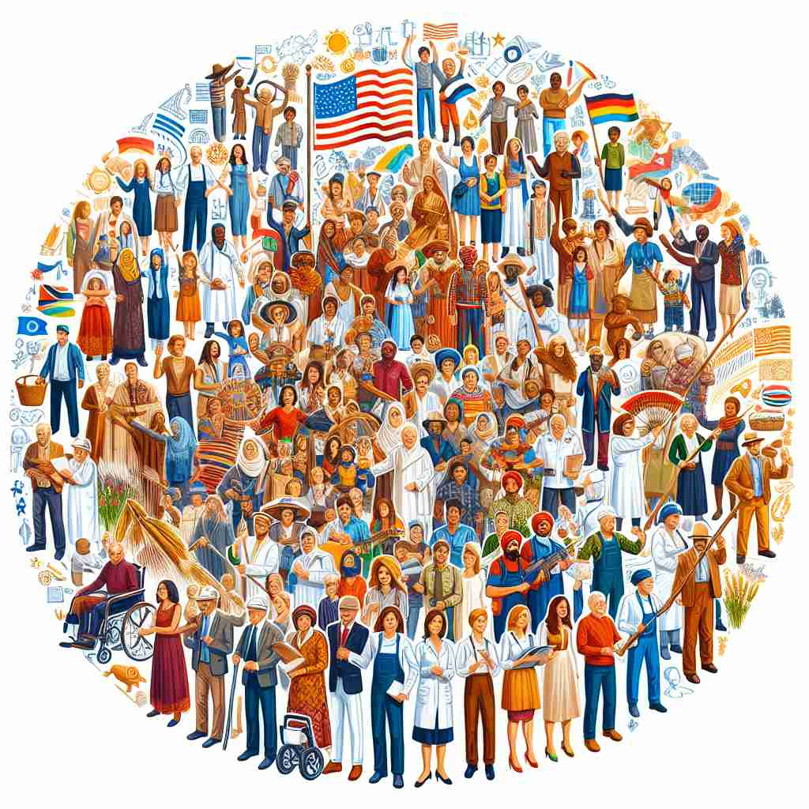

💬 China is a cultural nation with a rich history and diverse traditions. 中国是一个拥有丰富历史和多元传统的文化国度。

💬 The citizens of the nation celebrate their freedom together. 国家的公民共同庆祝他们的自由。
💬 The Olympic Games celebrate the nation of athletes from around the world. 奥林匹克运动会庆祝来自世界各地的运动员的团结。

💬 The festival celebrates the spirit of a diverse nation with people from many backgrounds. 这个节日庆祝了一个多元国家的精神，汇聚了来自不同背景的人们。
🧠 想象'nation'是一个大家庭。这个家庭有共同的祖先（血缘）、共同的经历（历史）、共同的生活方式（文化）和共同的交流方式（语言）。这个核心概念可以帮助你理解'nation'的各种用法，无论是指一个国家的人民、国家本身，还是具有共同特征的大群体。记住这个'大家庭'的比喻，你就能更容易理解和记住'nation'的多重含义。
🔈 ['neɪʃ(ə)n]
🗝️ n. a large group of people united by common descent, history, culture, or language, inhabiting a particular country or territory 由共同的血统、历史、文化或语言团结在一起的一大群人，居住在特定的国家或地区。
🎭 想象一个传统节日庆典的场景。不同地区的人们穿着各自的民族服装，跳着传统舞蹈，唱着流传千年的歌曲。这个节日象征着他们共同的历史和文化，展示了'nation'作为由共同血统、历史、文化或语言联系在一起的一大群人的含义。
💬 Japan is a nation with a rich cultural heritage. 日本是一个拥有丰富文化遗产的国家。
🌳 词根 "nat" 源自拉丁语 "natus"，意为 "出生"，结合名词后缀 "-ion" 构成 "nation"，表示 "国家，民族"。
🕸️ 1.native: 本地的，土著 2.national: 国家的 3.innate: 天生的
💡 记住 "nation" 时，可以将 "nat" 与 "出生" 联系起来，表示一个民族或国家作为一个整体的“出生”或起源，从而联想到“国家”这一概念。